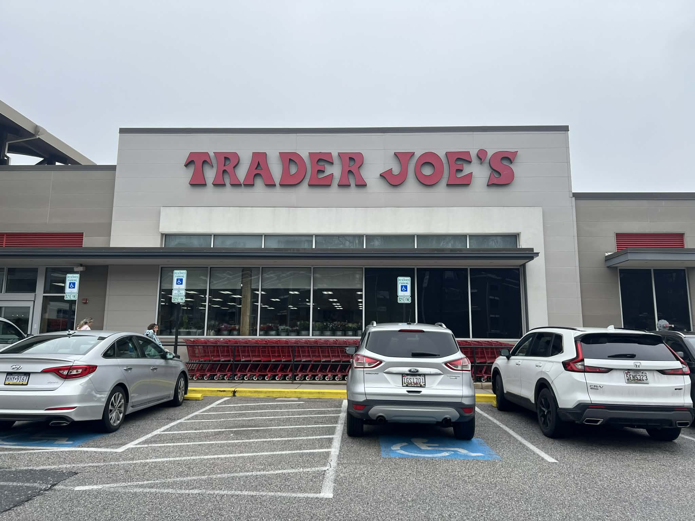
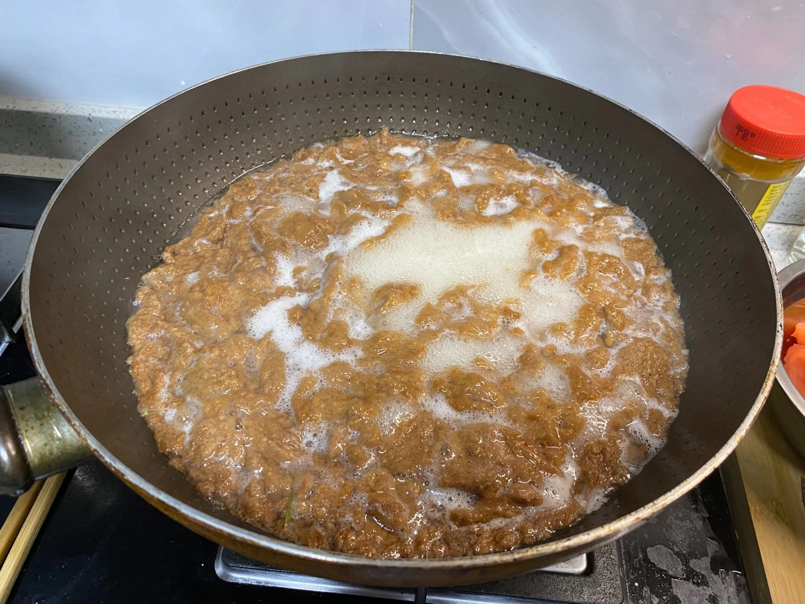
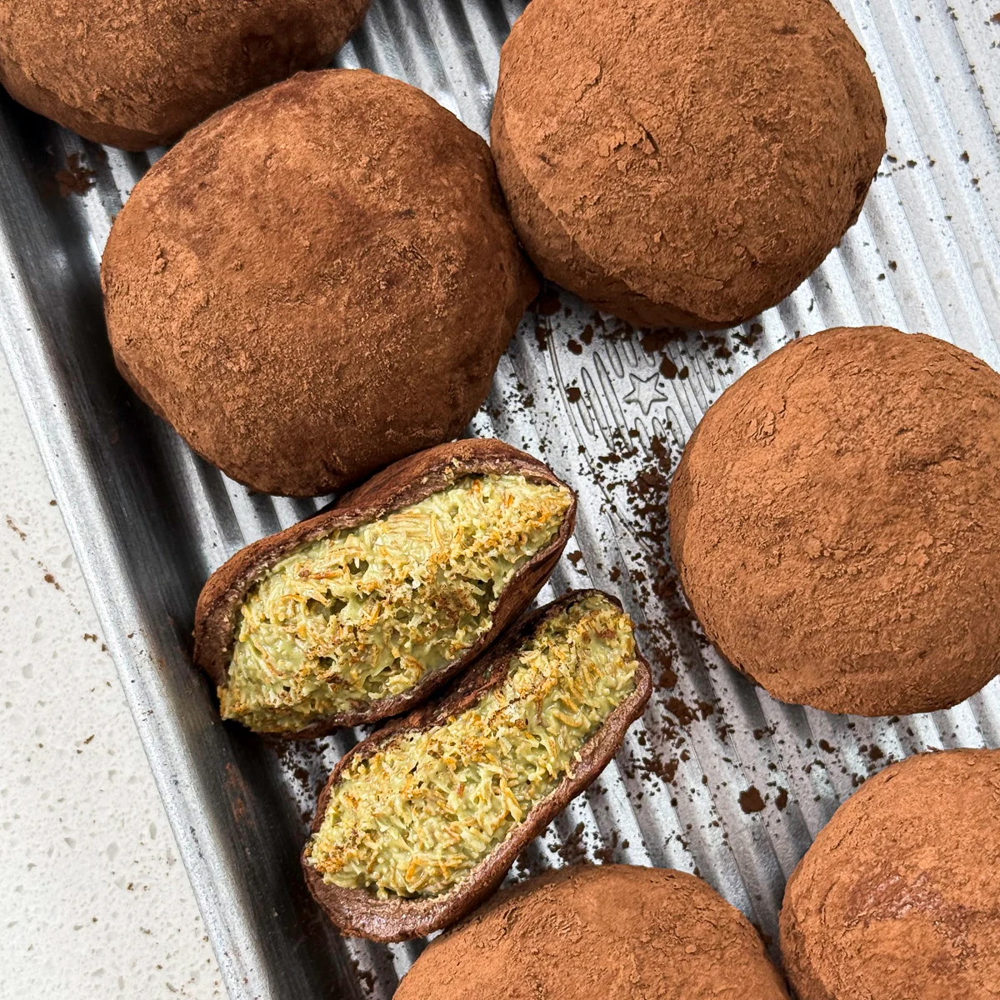

Stories locally brewed from Bmore
Everything from recipes to reviews to random thoughts.

Arrrg! Disgusting Food Experience
A pirate tale of curiosity, stinky tofu, and an unforgettable bite.
Read post
Barcocina Dining Review
A restaurant week breakdown covering atmosphere, dishes, service, and value.
Read post
What about Trader Joe's makes you come back?
A feature on pricing, product strategy, and the shopping experience behind customer loyalty.
Read post
Bark to Bowl: How the Chinese Innovated during Famine
A survival-food history tracing noodles made from elm bark and konjac.
Read post
Farmer's Market
What keeps shoppers returning to Waverly beyond pricing and signage.
Read post
Something to Chew on: A Dubai Chewy Cookie Recipe
A baking story about effort, mishaps, and a sweet shared result.
Read post